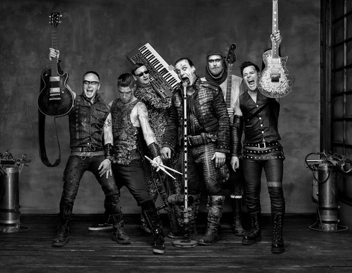
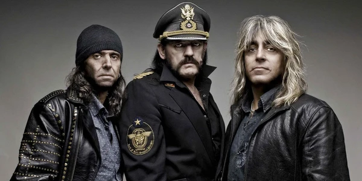
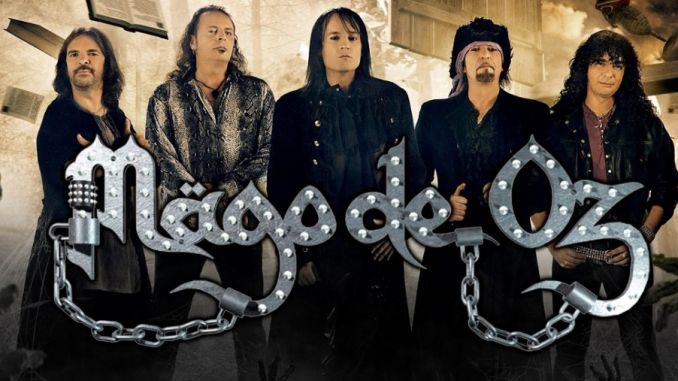

Artistas Destacados
|
 |

|
 |
 |
|
| Iron Maiden | Rammstein | Judas Priest | Motörhead | Mägo de Oz |
El Género Musical: Heavy Metal
¿Qué es el Heavy Metal?
El heavy metal es un género musical que se desarrolló a finales de los años 1960 y principios de los 1970. Se caracteriza por sus guitarras fuertemente distorsionadas, ritmos contundentes y vocales potentes.
Características principales
- Uso intensivo de guitarras eléctricas con distorsión y solos virtuosos.
- Baterías con doble bombo y ritmos rápidos o pesados.
- Voces que van desde tonos graves hasta agudos operísticos.
Historia y popularización
El género empezó a popularizarse a principios de los años 70. A continuación, se listan algunas de las décadas clave:
- Década de 1970: Nacimiento y consolidación (Black Sabbath, Judas Priest).
- Década de 1980: La Nueva Ola del Heavy Metal Británico (Iron Maiden) y el auge del speed metal.
- Década de 1990 en adelante: Aparición de subgéneros como el metal industrial (Rammstein) y folk metal (Mägo de Oz).
Instrumentos y técnicas
Los recursos habituales incluyen la guitarra eléctrica, el bajo, la batería y, en algunos casos, teclados o elementos electrónicos. Técnicas como el "palm mute" o los "riffs" repetitivos son habituales.